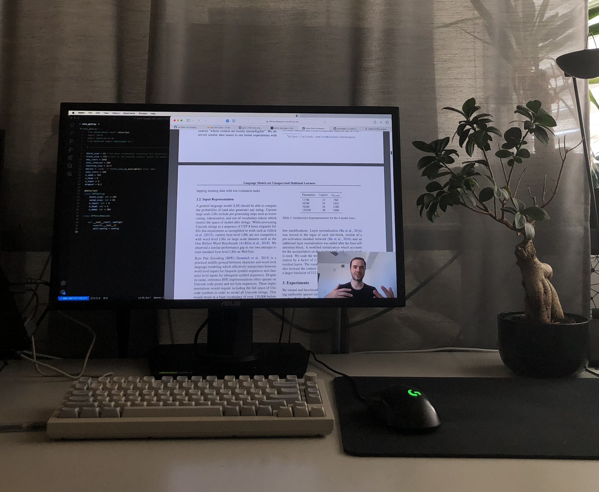

you can learn anything
2024-07-05

Yes, you can literally learn anything.
Throughout middle school and high school, like many others, I've never really felt the need to put time into studying for exams to get good grades.
Since studying at university though, the approach of just cramming a subject into memory the night before does not work anymore. Classes have become too complex. This is where I had to come up with a new approach.
So here are my three rules of how I learn anything.
Understand Connectedness
The first rule and first step to getting into a new subject is to get an overview of all its components. I start at Google and Perplexity by asking them about the subject. The search results will contain terms that you don't understand yet but that's exactly what you want, this is where learning begins. The next task is to find out what these terms or sub-components are about. Try to get a quick summary on what each term you don't understand is about. Now you can note it down into a "Map of Content" or "Mindmap".
You do that iteratively as long as you wish but the goal is to know what sub-branch belongs to what parent and how each of those is related to your main subject. If you already know about similar things try to map out these similarities to this new field. The human brain benefits tremendously from these connections.
Decompose to Principal Components
In Data Science Principal Component Analysis describes a method of decomposing high dimensional data into a lower-dimensional space by finding axes of the highest variance in the high-dimensional space and projecting every point onto these axes. We can do the very same thing to a new subject by decomposing it to its core elements - Drawing such connections to things you already know is really powerful but you will only fully understand a subject if you can decompose it to it's very own elements it's made up of. First principles thinking is often times most useful in the context of math, physics or other natural science subjects but it can be applied anywhere. For example, we want to learn about Trees. We can decompose trees into...
- Seed
- Soil
- Water
- Sunlight
Each of these core elements can be decomposed even further. For example we can take the Seed and decompose it further into...
- Seed
- DNA
- Contains instructions for the plant's development
- Composed of nucleotides (adenine, thymine, guanine, cytosine)
- Seed coat
- Outer protective layer
- Regulates water uptake and gas exchange ...
- DNA
You get what I mean. This is the exact extent of how you want to now upgrade your Map of Content or Mindmap or whatever notetaking tool you like to use. This second step should extend your overview iteratively from step one.
Discuss, Explain, Consume and let it dry
The last, perhaps most obvious, part is to live like someone who is an expert in the field. This step is easy if you're genuinely interested but it becomes very hard if the subject at hand is a random class at school that you have to study for without much interest.
Studying is hard and needs a lot of effort. Your brain is like a muscle that needs reinforcement to learn so studying should come close to the feeling of exhaustion in the gym and shouldn't be a laid-back activity.
But let's get back to what to actually do.
Find people within this field to talk to. This can be other students or it can be as simple as a forum or discord that might be about this subject. You wan't to talk to both more educated people in the field but also novices. You will learn new things by talking to experts and consolidate that new knowledge by teaching the novices the same way the experts taught you.
Use your time wisely. Whenever you're commuting (either by train, car or walking) you can listen to content. The content you consume will not be as effective of a source as the other points since its a rather passive task but it still gives you ideas on what experts in the field talk about or what the newest things are. This will give you different perspectives.
Rest up. The goal is not to pack your entire day with studying. Take a lot of breaks and do something else; Don't hop over to another class' subject - Actually do something different, get up, go for a walk and allow your brain to process what you just talked about or heard of.